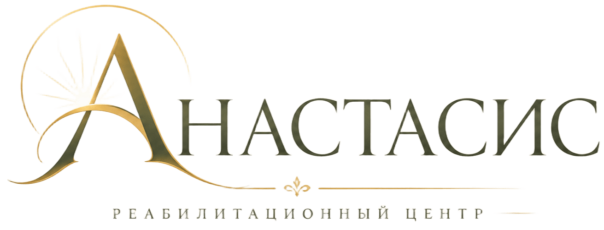
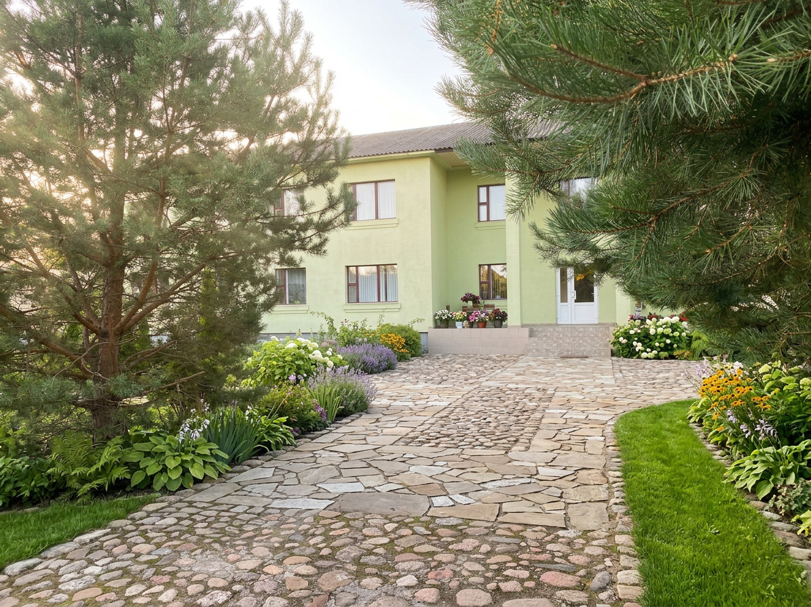
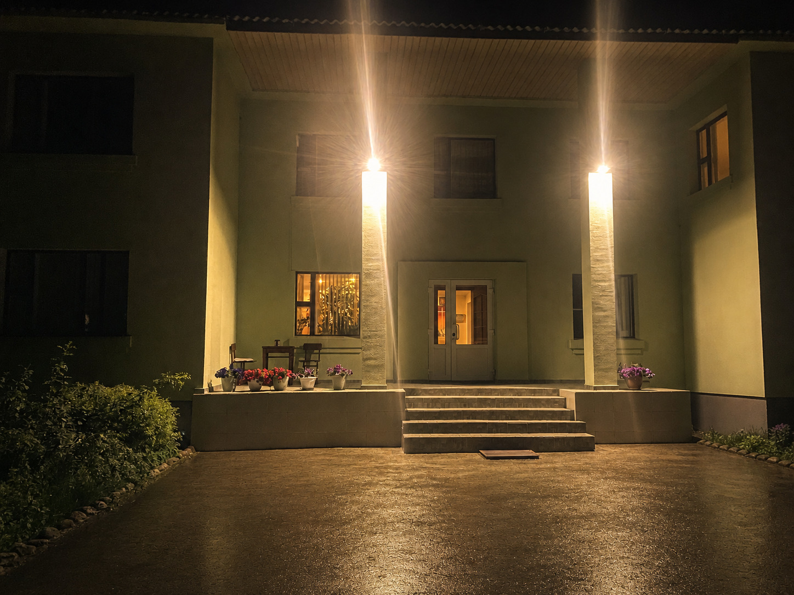

05 августа 2026
Встречи и общение
Материалы о встречах участников программы, общении и совместных моментах из жизни центра.
Подробнее
Центр «Анастасис» — это не только программа восстановления, но и пространство общения, поддержки и человеческих отношений.
В этом разделе мы рассказываем о жизни центра, встречах, мероприятиях и важных моментах нашего сообщества.


Реабилитационный центр «Анастасис» в Сосновке основан в 2011 году при поддержке Жировичского Свято-Успенского монастыря для помощи людям, столкнувшимся с алкогольной и наркотической зависимостью, и их возвращения к полноценной жизни.
В центре сочетаются психологическая и социальная реабилитация, духовная поддержка и программа «12 шагов» Анонимных Алкоголиков и Анонимных Наркоманов — путь последовательной работы над собой и восстановления жизни без зависимости.
Особенность «Анастасиса» — в сочетании профессиональной помощи и духовных ценностей. Здесь человеку помогают не просто прекратить употребление, а изменить образ жизни, восстановить внутренние опоры и сделать шаг к трезвой и самостоятельной жизни.
Каждый день в центре «Анастасис» наполнен общением, встречами и совместными делами, которые помогают создавать атмосферу поддержки и доверия.
Здесь мы делимся фотографиями, историями и воспоминаниями о событиях, которые становятся частью жизни нашего сообщества.
В этом разделе будут появляться материалы о встречах, мероприятиях и важных моментах жизни центра.
Материалы о встречах участников программы, общении и совместных моментах из жизни центра.
Подробнее
Фотографии и рассказы о событиях, которые помогают сохранить историю и атмосферу центра «Анастасис».
Подробнее
Истории, фотографии и важные дни, которые становятся частью жизни нашего сообщества.
Подробнее